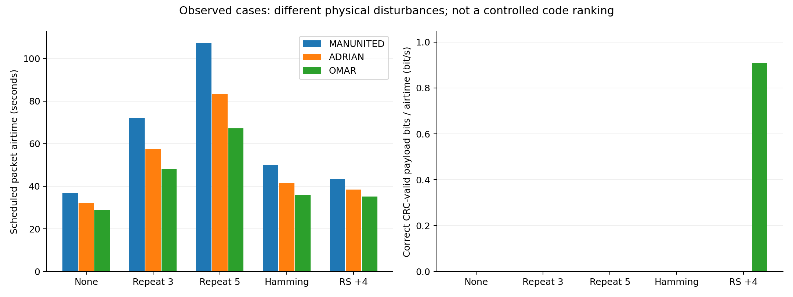
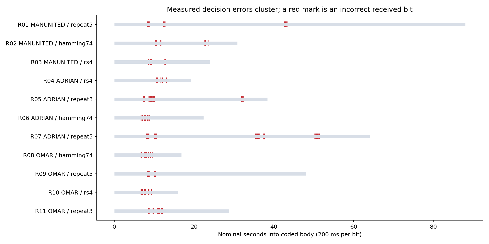
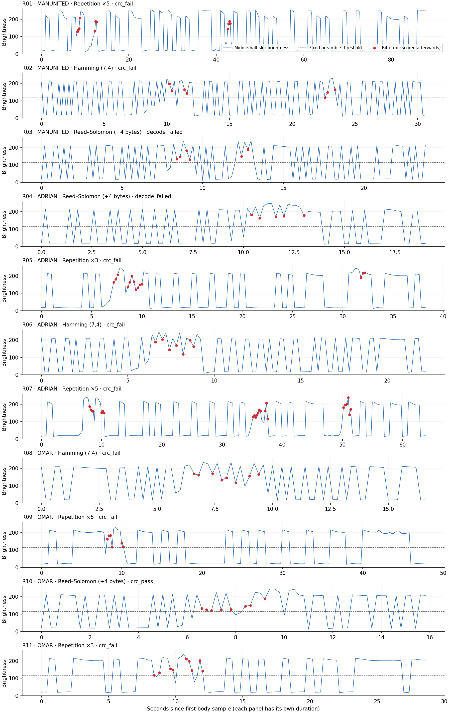

COMP0228 · physical recordings · 24 October 2026
The three new phone videos contain eleven packets. Four earlier noisy packets complete a descriptive five-method × three-message comparison. Three earlier clean uncoded packets and one clean repetition ×3 packet provide successful baseline checks. Earlier recordings are development evidence; they are not matched controls for the newer videos.
The receiver is unchanged: mean grayscale brightness in a fixed geometric screen region; actual per-frame video timestamps; public preamble for clock and threshold; middle-half bit sampling; header parsing; selected error-correcting decoder; payload CRC. Sent bits enter only afterwards to score errors. Packet segmentation uses already verified optical header windows, plus a one-second margin per side. This is segmented packet evaluation, not a test of blind continuous-stream packet discovery.
ROIs (x, y, width, height): B01/B02 = (950, 240, 150, 120); B03 = (850, 250, 160, 120). These were chosen geometrically during the header audit, before payload outcomes, and remain unchanged.
Channel errors use the transmitted coded-body denominator (including protected CRC bits). Payload errors use the decoded message denominator. They measure different quantities: do not subtract these counts to claim a number of corrected bits. A rejected FEC codeword has no decoded payload BER; it still counts as a failed packet with zero goodput.
| Case | Message | Method | Channel errors/bits | Payload errors/bits | Outcome | Airtime (s) | Goodput (bit/s) | Source |
|---|---|---|---|---|---|---|---|---|
| noisy_manunited | MANUNITED | Uncoded | 4/88 | 4/72 | crc_fail | 36.8 | 0.000 | Earlier development |
| noisy_adrian | ADRIAN | Uncoded | 2/64 | 2/48 | crc_fail | 32.0 | 0.000 | Earlier development |
| noisy_omar | OMAR | Uncoded | 1/48 | 1/32 | crc_fail | 28.8 | 0.000 | Earlier development |
| T02 | MANUNITED | Repetition ×3 | 6/264 | 2/72 | crc_fail | 72.0 | 0.000 | Earlier development |
| R05 | ADRIAN | Repetition ×3 | 14/192 | 4/48 | crc_fail | 57.6 | 0.000 | New batch |
| R11 | OMAR | Repetition ×3 | 9/144 | 3/32 | crc_fail | 48.0 | 0.000 | New batch |
| R01 | MANUNITED | Repetition ×5 | 11/440 | 2/72 | crc_fail | 107.2 | 0.000 | New batch |
| R07 | ADRIAN | Repetition ×5 | 24/320 | 5/48 | crc_fail | 83.2 | 0.000 | New batch |
| R09 | OMAR | Repetition ×5 | 6/240 | 1/32 | crc_fail | 67.2 | 0.000 | New batch |
| R02 | MANUNITED | Hamming (7,4) | 7/154 | 6/72 | crc_fail | 50.0 | 0.000 | New batch |
| R06 | ADRIAN | Hamming (7,4) | 7/112 | 4/48 | crc_fail | 41.6 | 0.000 | New batch |
| R08 | OMAR | Hamming (7,4) | 8/84 | 7/32 | crc_fail | 36.0 | 0.000 | New batch |
| R03 | MANUNITED | Reed–Solomon (+4 bytes) | 6/120 | No decoded output | decode_failed | 43.2 | 0.000 | New batch |
| R04 | ADRIAN | Reed–Solomon (+4 bytes) | 5/96 | No decoded output | decode_failed | 38.4 | 0.000 | New batch |
| R10 | OMAR | Reed–Solomon (+4 bytes) | 8/80 | 0/32 | crc_pass | 35.2 | 0.909 | New batch |
Read the RS success precisely: R10 (OMAR) corrected eight coded-body bit errors across two byte symbols. All eight errors were in the two CRC bytes; the raw OMAR message bits were already intact. This demonstrates recovery of a damaged protected checksum and a valid complete packet, not repair of eight message bits. R03 (MANUNITED) and R04 (ADRIAN) each damaged three byte symbols and were rejected. R04 also had intact raw message bits, but its CRC/parity corruption prevented validated delivery.
Descriptive totals for these three different message cases per method. Goodput is the sum of correct CRC-valid delivered payload bits divided by total scheduled packet airtime, including guards, preamble, header, CRC and redundancy. Recording pauses and discarded retakes are excluded; this is not wall-clock experimental throughput.
| Method | Successful cases | Total airtime (s) | Aggregate goodput (bit/s) |
|---|---|---|---|
| Uncoded | 0/3 | 97.6 | 0.000 |
| Repetition ×3 | 0/3 | 177.6 | 0.000 |
| Repetition ×5 | 0/3 | 257.6 | 0.000 |
| Hamming (7,4) | 0/3 | 127.6 | 0.000 |
| Reed–Solomon (+4 bytes) | 1/3 | 116.8 | 0.274 |

Zero-to-one dominance is consistent with added light lifting a dark-symbol measurement above the fixed threshold. Error clusters violate the intuition that every repeated copy sees an independent random flip. Consecutive runs describe decision errors; light interference can continue across transmitted ones without causing a bit error, so run length is not the full sweep duration. These observations do not establish a complete stochastic noise model.

| Case | Zero-based coded-body error indices | Coding interpretation |
|---|---|---|
| R01 | [41, 42, 43, 44, 61, 62, 63, 213, 214, 215, 216] | 2 repetition blocks exceed their majority correction limit. A sweep can corrupt several adjacent copies together. |
| R02 | [51, 52, 57, 58, 113, 114, 117] | 3 seven-bit words contain more than one error. Ordinary Hamming (7,4) only guarantees correction of one error per word; multiple errors may be miscorrected. In this packet, systematic message positions had 4 errors before correction and 6 afterwards, both over 72 message bits. |
| R03 | [42, 43, 45, 46, 62, 64] | 3 byte symbols are damaged. Four parity bytes guarantee correction of at most two unknown erroneous byte symbols, not just two bits. The raw systematic message positions contain 6 errors over 72 bits; this is diagnostic only and is not a CRC-validated delivered message. |
| R04 | [52, 54, 58, 60, 65] | 3 byte symbols are damaged. Four parity bytes guarantee correction of at most two unknown erroneous byte symbols, not just two bits. The raw systematic message positions contain 0 errors over 48 bits; this is diagnostic only and is not a CRC-validated delivered message. |
| R05 | [36, 37, 38, 43, 44, 45, 46, 47, 48, 49, 50, 159, 160, 161] | 5 repetition blocks exceed their majority correction limit. A sweep can corrupt several adjacent copies together. |
| R06 | [33, 35, 37, 39, 41, 43, 44] | 2 seven-bit words contain more than one error. Ordinary Hamming (7,4) only guarantees correction of one error per word; multiple errors may be miscorrected. In this packet, systematic message positions had 5 errors before correction and 4 afterwards, both over 48 message bits. |
| R07 | [40, 41, 42, 43, 50, 51, 52, 176, 177, 178, 179, 180, 181, 182, 186, 187, 188, 251, 252, 253, 254, 255, 256, 257] | 7 repetition blocks exceed their majority correction limit. A sweep can corrupt several adjacent copies together. |
| R08 | [33, 34, 37, 39, 40, 42, 45, 47] | 3 seven-bit words contain more than one error. Ordinary Hamming (7,4) only guarantees correction of one error per word; multiple errors may be miscorrected. In this packet, systematic message positions had 6 errors before correction and 7 afterwards, both over 32 message bits. |
| R09 | [41, 42, 43, 44, 50, 51] | 1 repetition blocks exceed their majority correction limit. A sweep can corrupt several adjacent copies together. |
| R10 | [33, 34, 35, 37, 39, 42, 43, 46] | 2 byte symbols are damaged. Four parity bytes guarantee correction of at most two unknown erroneous byte symbols, not just two bits. The raw systematic message positions contain 0 errors over 32 bits; this is diagnostic only and is not a CRC-validated delivered message. |
| R11 | [42, 44, 48, 49, 54, 55, 56, 59, 60] | 3 repetition blocks exceed their majority correction limit. A sweep can corrupt several adjacent copies together. |
Video spot-checks at B01 28.26 s and B02 31.45 s show a bright screen reflection with the interfering phone in front of part of the display. These trials therefore involve real local glare and possible occlusion/camera-exposure effects; they are not a calibrated additive-Gaussian channel.
Blue is the brightness sampled for each bit. The dashed line is the threshold fixed from the preamble. Red marks errors identified only after decoding by comparison with the transmission log.

We can demonstrate a working physical channel, real disturbances, multiple repetition levels, Hamming and Reed–Solomon, and measured error/rate trade-offs. We cannot declare a universally best code from these trials: illumination severity, exposure and framing differ; there is one selected attempt for each method/message pair; the three messages are not identical repeats. Do not pool bits as independent trials or present a small-case success fraction as a precise reliability estimate. The original B01 take was replaced because the user reported a recording mistake; its controller logs remain preserved.
The new captures have now been inspected with the fixed baseline. Develop any receiver improvements on the earlier development recordings, freeze settings, and describe any tuning informed by these new results transparently. A later result tuned against this batch is exploratory, not untouched held-out validation.
All 19 physical packet results (CSV) · Eleven new packet results (JSON) · Method and limitations. Per-packet receiver files preserve sampled bits and timing, including raw bits from rejected RS packets. Original videos and transmission logs are unmodified.